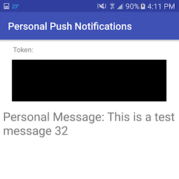

Daniel Weber
Enrollment Push Messages with Firebase Jan. 12, 2017
This is a project that I started because I wanted to be notified when a class at Cornell opened up. During Cornell's add-drop period in the fall and spring, if you want to get into a class that is full, you have to constantly refresh the student center page until someone else drops the class and a spot opens up for you. A quick Google search did not reveal any already implemented notification systems. So I decided to try and see if I could set up a notification system for myself.

Because I do not have access to the student center backend, I had to work with the front end. I decided that I needed to try emulating refreshing the student center page from the command line, so I opened up Postman and captured my request to the student center enroll page. One of the nice things about postman is that it shows you the cookies that were sent with a request, which is what I need to "log in" from the command line.

After I had the cookie, I set up a simple Node.js script that would send a get request to the student center URL with the cookie in the header of the request. I then parsed the response from the server to find the specific class that I wanted to enroll in and check if there was a spot open (I basically used the image tag, so hopefully they won't change that). After I could tell if a class was open or not from the command line, I wanted to know if I could send a push notification to my phone. A quick google search revealed that Google's Firebase offered a simple and more importantly free API for sending push notifications to a phone. After following the firebase app setup for android and slightly customizing it for my purpose, I added an HTTP request to the Firebase API to my class checking script that would send a push message to a device specified by a token.

I thought that I was done after this, but I realized that I would be carrying around my laptop and it sleeps whenever the screen is closed. I needed to find a preferably free service that would allow me to run a small secure script in the cloud. After experimenting with a few online IDE's, I realized that most of them sleep after some amount of inactivity. I finally remembered the Beep Boop Slack bot service that I had used at my internship at Occasion. Their free plan runs a small docker container in the cloud that you can hook into with slack. So I downloaded Beep Boop's node started bot, set up a simple listener for a start script command in slack, and plugged in my existing push notification code.

After setting up the private environment variables for the bot (such as my cookie and Firebase api key), I started it up, and it worked. The only downside is that I have to reenter my cookie every day, as it expires after about a 24 hours. The other thing that I realized about this is that I didn't really have to do the whole Firebase setup, because the slack app will send you push notifications when you get a direct message. Nevertheless, it was still fun to get exposed to Firebase and I am definitely interested in the other services. I also realized that I could extend the push notification system to arbitrary tasks, so I went back to the push notification code base and made it more general. You can find that code here. I tried to include a little tutorial on how to get started with Firebase how to set up the android app. The slack bot code can be found here.